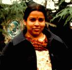

WEEKEND THOUGHTS # 11

>>>>> Introduction <<<<<
By: Surjit Sahoo
Have you ever read a good story! how does it feel ! All of us
went to colleges and universities and institutes. We had our
annual magazines; And there used to stories from our seniors
and alumni with a nice nostalgic touch of remniscient past;
About those lost years in their life; how nice or how worse,
it was in their time; their stories of struggle and success
with life. Did not it excite you, inspire you in some way or
other. Did not it feel like a part of your life, too ! Did not
it feel good to read those little "Atmakatha" (autobiography)!
That's how I exactly felt, when I read this weekend's article.
And all those good feelings are not lost. You might be more busy
these days and have less time for yourself. It's a long article.
(And for the impatient souls, it is exactly 294 lines, 2584 words
and 14742 characters). So, print it. Take it home and read it.
You'll treat yourself.
This weekend's article is by Bigyani Das. It is a recollection of
sweet memories from her college days and a lot to learn from past.
See, if you agree. The review is another nice story by Debasmita.
>>>>> A Personal Introduction <<<<<
Bigyani Das (Bigyani Jena name before marriage)
Education: [Govt. Girls High School, Dharpur(near Bari)
Kendrapara high school(not girls, but the main one)
Ravenshaw girls High school, Cuttack ]
S.B. Womens College, Cuttack(I.Sc. and B.Sc.)
Vanivihar(M. Sc. in Mathematics)
IIT Bombay(Ph. D. Mathematics)
The Johns Hopkins University, MA (postdoctoral fellow
in the department of Biomedical Engineering)
Interest: Reading (finished most of big big novels during high
school)
Writing (short stories, poems etc. in oriya; read them
in many gatherings like "bisuba milana" and
"pathaprantara kabita" etc. during my college and
university days; )
Songs, music and dance and drama ;
travel.
Goal in life: Very difficult goal. To be established in academic
as well as in literature.
I have been a member of ornet for about four years. I never
participated in any discussion going on in the ornet, nor gave
any comment about any sensitive matter. I very quietly enjoyed
most of the ornet postings, for example: kits, seeds, osa
convention, monoj's story, xxxxx's poetry, bijoy babu's padyanta
and many side effects of those main subjects. One may ask, Why
was I so silent? Don't I have any feelings about anything? Well,
I have feelings about most of the things. However, my own
responsibilities consume most of my time. I am a full time
researcher as well as a mother of three children. Apart from
those, there was always search for jobs, since most of the
appointments I had were temporary. Because of that, I think most
of the ornetters who are silent in some issue have something
more serious to think about. It may also be that they don't give
these things any priority as comapared to their own problems and
concerns.
About the betterment of Orissa, I have my own view point which
many people may not agree. I think, although it is necessary to
start something together and make a large scale contribution,
still starting something good from our own origin is important.
For example, I am brought up in my village. If I can do something
for my village, in the long run that is also a contribution for
the betterment of orissa. For all the people who are from
cuttack; they probably can at least think of how to improve the
drainage system in their own "sahi". However, until now I don't
have any ideas myself. The situation is very complex. I have
faced a lot of obstacles in my life. In particular, if you have
gone through the phases after M.Sc. Although I had topped the
university, still I found myself in a very desperate situation
after the results were declared. I did not want to do M.Phil.,
since I actually wanted to do something to support myself.
Fortunately, I had cleared the GATE examination and that's how I
joined BHU and then IIT Bombay. But all those things happened,
because I dared to venture. I dared to go to Kharagpur to appear
at the GATE exam, I dared to go to Banaras alone and join a
project there. Being dissatisfied with the type of life there I
dared to go to IIT Bombay for the interview and then joined the
Ph.D. program. The daring plunges had not been so easy for me.
But, anyway, I am here. Crossed many steps in the ladder, but
still far behind from my goal.
About establishing relationships with others I try to follow the
following rules
"Guna adhike moda bhaba
Nikruste anugrahi heba
samana jane mitra pana
Ehiti uttama lakhyana"
When Debasmita requested me for an article, I was actually busy,
I was in the middle of my research problem, didn't want to divert
my mind a little. But, then thought, alright. I have been
so silent in ornet for so many days. Let's write something.
And here is my article about my days in vanivihar.
>>>>> Article <<<<<
My days in Vanivihar
====================
When I joined Vanivihar, it was very hard time for me. There was
no place in hostel to stay. The senior girls, whose exams were
still not finished had to stay another 4-5 months. By help of one
of my senior from Sailabala college, I found one senior girl who
agreed to sign me as her guest. The formalities were over and I
stayed as her guest in her room. The room was very small. She had
another guest too in her room. However, she had a best friend who
had occupied one single room. So, apa X was spending most of her
time with her. Time passed like this. We did not have any place
to take bath. Since the water supply was for a very limited
time, during which the senior girls had to take bath; store water
for the afternoon and so on and so forth. For us we had to go to
the garden. There was a pipe there to water the plants in the
garden. All the first year postgraduate students found that as
an oasis in the desert. It was the only source for us to get
some water. However, there were some girls from Balasore, who
always were in the line from the beginning. As soon as they get
up in the morning, they go there, chat with each other and they
will be in the line ahead of us. It was a very terrible
experience.
A memorable event happened just after a few days of my joining
the hostel. It happened during winter. My father had sent some
money for Prathamastami. I was very happy and already planned
to go to the market next day to buy new cloth for me. However, on
that night, when I opened my box, the money was gone. I was
stunned. I could not believe that this could happen. But it had
happened. The other first year student then suggested me that apa
X might have taken the money. She told me many things about apa
X; that apa X has a boy friend, and that boyfriend is actually
her uncle. Then how apa X has not paid her hostel bills for so
many months and how the hostel manager has given her notice to
leave the hostel if she does not pay the bills within one month
etc. Finally she suggested, we should look through all the
storing places of apa X. So, then we started searching all around
the room, not leaving a single cornor. When apa X returned her
anger reached to her extreme. She was the boss as you can
imagine. She had very kindly accepted us as her guests and given
place to stay. So, she became very angry, as angry as you can
imagine. She scolded us so much, and then finally told us to stay
somewhere else since we have doubts about her (suspected her).
So what can we do? We were desperate. Alright, we than found a
place in the dormitory. Thirty six first year students were
staying there. It was no larger than a big class room or a hotel
conference room. But still we adjusted there. Apa X also forgot
to pay back my 300 rupees which she borrowed from me. I was
really feeling bad about the whole situation. The day she
had accepted me as her guest, I had promised myself to be
obliged to her and to do anything she asked. It was a kind of
immotion. But things happened differently and I was in a
critical situation. Once I dared to ask her about my money. She
remembered, but reduced the amount to 100 rupees; and promised me
to pay 50 rupees the next day and the other fifty rupees after
a month. Anyway, she paid me fifty rupees the next day, but did
not pay the other fifty rupees the next month. Time passed and
so did my days in Vanivihar.
There were also many good memories, There was a day of
celebration by my friends when I broke the record in part one
examination. Also there was a time when I got literary champion
award. There were also many fun filled events when I used to go
with my friends to read poems in gatherings like "Bisuba Milana"
and "Patha Prantara Kabita Patha" etc. There are also many mixed
memories which I am not describing, since it will be mostly
criticism about the behaviour of boys towards girls in the class,
like throwing the chalks, writing different names in the
blackboard and also giving many absurd remarks. Although that
type of behaviour had created confusion between some classmates
and myself; I am happy that at the end we all were very good
friends. I should end here. Whatever it is, it's a part of my
life and it's unforgettable.
>>>>> Review/Comments <<<<<
By: Debasmita Misra
When I recieved the above article from Bigyani I was overwhelmed
due to the context of the article and also her introduction
part. I was occupied with many things for which I could not send
this to anyone for their comments or inputs. However, I thought
why not me? I can write a few lines of comments based on the
content of the article.
Many have contributed articles to the Weekend Thoughts column. I
know that people have taken time out of their busy schedule to
contribute to this column. It is a way of sharing each other's
experience and also knowing each other better. The following is
an excerpt from the mail sent to me by Bigyani that included the
above article. The reason I am presenting this is because I
never knew before what goes on in the mind of an author when
they have lack of time but a committment to write something for
the column.
"...I was in the middle of a research problem and could not
think anything more critically. But, since I had given you my
consent, I spent sometime today afternoon in writing something.
I don't promise anybody anything easily. But if I promise, I try
to keep it..."
After I went through the contents of the article I felt like
sharing a few of my memoirs of the days I was a undergraduate
engineering student. My parents lived in Bhubaneswar and I went
to the College of Agricultural Engineering and Technology in
OUAT, Bhubaneswar. For that purpose I was a day scholar. Being a
day scholar in an engineering college makes the student life a
bit difficult. One has to interact with the students who are
hostel boarders. That provides help for the courses plus it
increases friendship. So, I had to visit the hostel frequently
as a freshman. The first few months of the freshman year were
eventful. One has to encounter ragging. What developed as a
result of that was a sharing of sympathy for each other and a
very strong bondage of fellowship. I was least exposed to
ragging but my frequent visits helped me a lot in the future.
The first two years went by with enthusiasm and high spirits.
Almost all the courses were non-engineering courses and we were
eagerly looking forward to lay our brains into some real
engineering problems. I distinctly remember about "asymptotes"
that was taught in one of our mathematics courses. I used to
wonder, what the heck does this have to do with engineering?
Then came "ground water hydrology" a.k.a. "Pataal Ganga" course.
The way the teacher started teaching made me feel that a river
is flowing underneath our legs. Many confusions, many
frustrations started immediately after. However, there are a few
things that one cannot forget. I am just going to mention a
couple before I end this.
Before one of our mathematics final examination the teacher gave
us about 25 questions to prepare. We expected that he will set
some questions out of these. So, one of our friend took all the
25 questions to our class topper and requested him to solve it.
Then he sneaked some exam sheets (extra ones with the seal) and
copied one problem on one sheet. He took all 25 sheets to the
exam. His idea was to pick those sheets which correspond to the
5/6 questions and attach these to the main exam paper and submit
it. One of the question was solving simultaneous equations.
Unfortunately, the teacher did not set the same equations as he
asked us to solve during our preparation for the exam.
e.g., If the book said 10x+5y=13
and 8x+3y=17
The teacher set 7x+4y=15
and 2x+9y=6
So, our friend was confused about what he should do. He
immediately came up with a brilliant idea (out of his laziness
to write everything or may be something else). He wrote the
following on top of the particular sheet he had with him and
submitted the paper: "Let 10=7, 5=4, 13=15, 8=2, 3=9 and 17=6.
The solution follows:"
There was another incident during a course in Advanced Farm
Machines. The teacher was teaching us about the various forces
acting at various points on a tractor. He drew a
(what-he-called-a) skeleton of a tractor. Then he looked at a
prescribed book and chose a point : Let this pint be X15. Then
he chose another point and said : Let this be X6. Then he went
on defining the forces at those points as F15 and F6. We never
saw a X1 or X2 or whatsoever.
By the middle of our junior year I was feeling very depressed.
There was no urge to study because the teachers were
uninterested and the job situation was getting worse. During the
senior year, we had to fight for creating jobs. We were partly
successful. That was when my friend Jogesh Panda (who lives in
St. Paul, USA right now) started urging me to apply for higher
studies. This provided me with a new faith and energy. Being in
OUAT, the information highway was far beyond our reach. But
where there is a will there is a way. Our only role model in the
distant horizon was Dr. Chittaranjan Ray of Urbana, Illinois.
And our sole inspiration was our undergraduate advisor Dr.
P.C.Senapati. Well, we made it :-)
(P.S.: If this inspires you to write your own story and share it
with all of us, we'd be more than happy to listen from you. Surjit)
DM-- A followup of the above article was posted in ORNET by
Sashi Satpathy.
Please click here to read his reminiscence of the past.
--
Your comments are always welcome...

 Bigyani
Das
Bigyani
Das

Ride back to Home Page...
![[IMAGE]](../../wt/rath.gif)